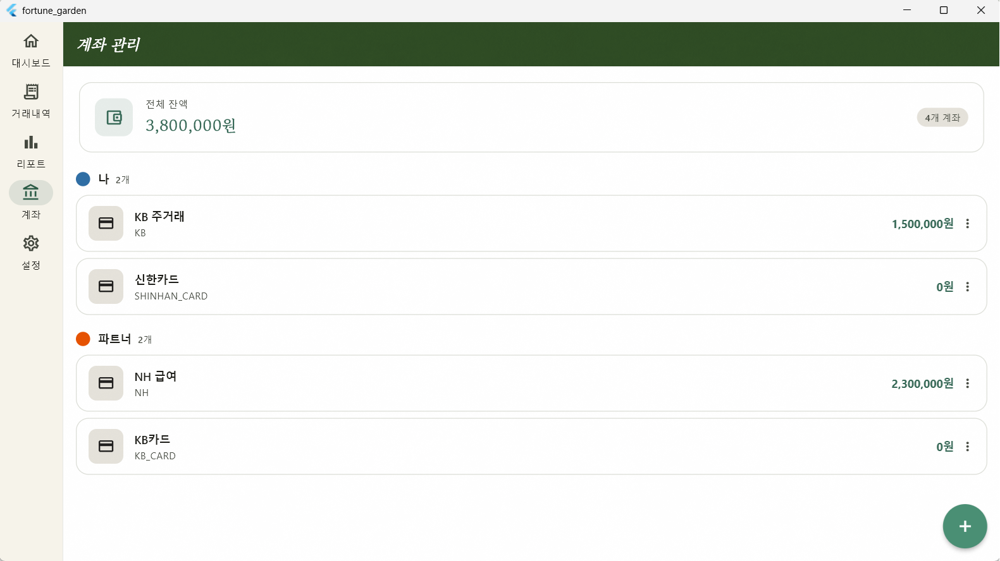
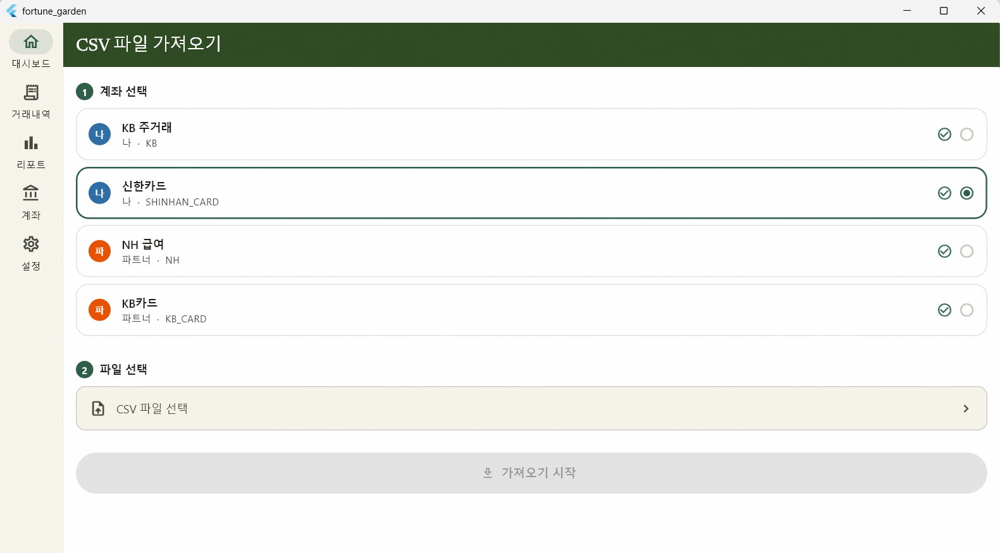

Screen Update
SCR-007 · 계좌 관리 화면

프로필별 계좌 목록 확인 및 잔액 합산 기능을 구현하고, BottomSheet를 통한 직관적인 편집 환경을 조성하였습니다.
기능 점검 결과
| 항목 | 상태 | 비고 |
|---|---|---|
| 프로필별 계좌 목록 + 잔액 합산 카드 | ✅ 완료 | - |
| 계좌 등록/수정 폼 (BottomSheet) | ✅ 완료 | 프로필·기관·별명 설정 포함 |
| 계좌 삭제 (확인 다이얼로그) | ✅ 완료 | cascade 삭제 경고 문구 포함 |
| 가져오기 이력 시트 | ✅ 완료 | _ImportHistorySheet 연동 |
| CSV 가져오기 화면 이동 | ✅ 완료 | context.go('/import') |
디자인 적용 내역
- 헤더: SliverAppBar 적용 (Light #2D4A22 / Dark #051A0F), Serif Italic 타이틀 적용.
- 레이아웃: CustomScrollView 기반 Sliver 구조 변경 및 GrainOverlay 적용.
- 잔액 요약 카드: AppTheme 수입 색상 적용 및 계좌 수 뱃지 추가.
- 계좌 타일: InkWell 커스텀 레이아웃, 잔액 강조, more_vert 옵션 버튼 추가.
- 옵션 시트: 핸들 및 계좌명 헤더 추가, backgroundColor 명시적 정의.
Screen Update
SCR-008 · CSV 가져오기 화면

Step 기반 프로세스를 도입하여 파일 선택부터 결과 확인까지의 사용자 흐름을 개선하였습니다.
기능 점검 및 버그 수정
- 프로세스: 계좌 목록 로드, 파서 유무 표시, FilePicker(.csv) 연동 완료.
-
상태 관리:
csvImportStateProvider를 통한 실시간 결과 카드(신규/중복/오류) 구현. -
버그 수정:
reset()호출 시_pickedFile뿐만 아니라_selectedAccountId도 초기화되도록 수정.
구현 상세: _StepLabel & _AccountCard
// 계좌 카드 내 파서 유무 아이콘 표시 로직 Row( children: [ Text(account.alias, style: theme.textTheme.titleMedium), const SizedBox(width: 4), Icon( hasParser ? Icons.check_circle : Icons.help_outline, color: hasParser ? AppTheme.incomeLight : theme.colorScheme.tertiary, size: 14, ), ], )
Standard
공통 디자인 원칙
| 항목 | 적용 기준 |
|---|---|
| 헤더 배경 | Light: #2D4A22 / Dark: #051A0F |
| 수입 색상 | AppTheme.income (Light #366856 / Dark #4EDEA3) |
| 지출 색상 | AppTheme.expense (Light #A63A3C / Dark #FF6B6B) |
| FAB | BG #4A8F74 / FG #FFFFFF (AppTheme 전역 설정) |
| 텍스처 | GrainOverlay (Opacity 0.04) 전체 Scaffold 적용 |
Next Step
미해결 및 향후 작업
-
암호화 도메인:
accountNumberEnc데이터 암호화 구현 (flutter_secure_storage 연동 필요). -
라우팅 상수화: '/import' 등 하드코딩된 경로를
app_router.dart내 상수로 일괄 교체 예정. - 다음 작업: [ ] SCR-011 프로필 관리 화면 기능 점검 및 디자인 적용.
Comments